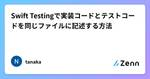
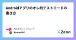
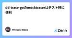
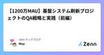

Zennの「Test」のフィード
フィード

Mailtrapを利用した開発環境でのメール送信テスト
Zennの「Test」のフィード
概要 本記事では、開発環境でメール送信のテストを行う際の課題とその対策について解説します。 実際のメール送信では、セキュリティポリシーの制限や誤認識により、コードの問題か環境依存の問題か判断が難しくなるケースがあります。 そこで、Mailtrapを利用して安全かつ正確にテストメールの送信状況を確認する手順を紹介します。 Mailtrapの紹介 Mailtrapは、テスト用のメールアドレス（例: @example.com）を利用できるサービスです。 料金：無料 クレジットカード登録：不要 ※料金は変更される可能性があるため、使用前に以下を確認してください。 https://ma...
1日前

Docker 環境で Playwright テスト実行時に「Invalid Host Header」エラーが発生する問題の解決方法
Zennの「Test」のフィード
環境情報 Node.js: v20 Playwright: v1.49.1 Docker Compose webpack-dev-server: v5.1.0 OS: macOS 24.3.0 はじめに 私のプロジェクトでは、フロントエンド環境と Playwright（E2E テスト）環境を別々の Docker コンテナとして分離しています。 分離するアプローチをするとコンテナ間通信の設定が必要になるので、解決方法を紹介します。 システム構成 Docker Compose を使って、以下の 3 つのサービスを含む環境を構築しました： Frontend: Web アプリ...
1日前

ソフトウェアテストのカバレッジ基準を順を追って理解する：Line Coverageから MC/DCまで
Zennの「Test」のフィード
ソフトウェア開発におけるテスト手法は似たような名前で非常に混乱します。これらの違いを理解することは、テスト実装時の混乱を避けられる、非テスト担当者への説明をスムーズに行えるなどメリットがあると思います。 今回は、ソフトウェアテストでベーシックな5つのカバレッジ基準について、基本的なものから高度なものへと段階的に確認していきます。これらのカバレッジ基準は、それぞれ前の手法の問題点を補完する形で発展してきました。 Line Coverage だけでは未実行のコードは分かるが、条件分岐のテストが不十分 Branch Coverage では条件のtrue/falseをテストするが、個々の条...
2日前

TypeScript を前提とした楽観的テスト基準について
Zennの「Test」のフィード
みなさん、テスト書いてますか？ この記事は「テスト書いてますか？」という質問に「100%書いています」と答えられない私が、 どのような基準でテストを書く／書かないを決めているのかについて書きます。 Q.なぜ書かないのか？ A. TypeScriptで型安全なコードを書いているから。 日頃開発しているアプリでは、おおよそシンプルなmap, filter的な処理がコードの80%以上です。 インフラを意識しない視点では、次のようなデータの流れです。 Prisma でデータを取得（DBから取得したデータに型が付いている） tRPC経由でレスポンス（バックエンドの型情報がフロントで参照できる...
2日前

テスト記事 (2025/03/06版)
Zennの「Test」のフィード
テスト記事 これはZenn-Qiita同期ツールのテスト用に作成した記事です。 特徴 Zenn形式で書いた記事を Qiita形式に自動変換 GitHub Actionsで同期 コードサンプル console.log("Hello, World!"); まとめ この記事はテスト用です。正常に同期されていれば、Qiitaにも同じ内容が投稿されているはずです。
3日前

dio & mockitoでテストコードを書く
Zennの「Test」のフィード
ライブラリを使用してテストを書く dioだと専用のライブラリを使用するとテストコードを書きやすくなるのだが、どうやらもうメンテナンスされていないようだ🤔 https://pub.dev/packages/http_mock_adapter/example なので案件でも使用することのあったmockitoを使ってみた。 https://pub.dev/packages/mockito https://pub.dev/packages/dio https://pub.dev/packages/build_runner pubspec.yamlにモジュールを追加してみよう。 name: f...
3日前


「単体テストの考え方/使い方」勉強会03 〜単体テストの3つの手法〜
Zennの「Test」のフィード
Specteeでエンジニアをしている永野、峯田、和山、國久です。 今回は社内輪読会で読んだ書籍「単体テストの考え方/使い方」から、単体テストの3つの手法についてまとめました。 本記事は数回に分けて輪読会参加メンバーが執筆しています。 前回の記事（モックの概要・使いどころ）はこちら。 https://zenn.dev/spectee/articles/spectee-unit-test-mock 単体テストの3つの手法 単体テストには次の3つの手法があります。 出力値ベーステスト 状態ベーステスト コミュニケーションベーステスト 以下でそれぞれの手法について説明していきます。 ...
5日前

初学者向け！テスト設計の基本
Zennの「Test」のフィード
🛠️ 初学者向け！テスト設計の基本 ソフトウェア開発において、テスト設計 はとても重要です。バグを減らし、システムの品質を向上させるために、適切なテスト設計を行いましょう！この記事では、初心者にも分かりやすく、テスト設計の基本を解説します。✨ ✅ テスト設計とは？ テスト設計（Test Design） とは、ソフトウェアの品質を確保するために、どのようにテストを行うかを計画・設計するプロセス です。 🎯 テスト設計の目的 バグの早期発見 🐞 品質の向上 🚀 開発コストの削減 💰 ユーザー満足度の向上 😊 テストを適切に設計することで、開発の効率もアップします！ ...
5日前

【1200万MAU】基盤システム刷新プロジェクトのQA戦略と実践（後編） 1
1
Zennの「Test」のフィード
はじめに UbieでQAエンジニアをしているMayです。Ubieは「テクノロジーで人々を適切な医療に案内する」をミッションに、AI問診エンジンや医療プラットフォームを提供しています。 本記事では、toCサービスの基盤システム刷新プロジェクトにおけるQAプロセス、特にテスト戦略とリリース計画に焦点を当て、開発の裏側を紹介しています。 このリプレイスは、既存機能の維持と品質確保が最重要課題でした。そこで前編では、クロスファンクショナルなスクラムチームで、①リスクストーミングによるリスク可視化、②テストレベルと責務の定義による品質保証体制の構築、③段階的リリース計画とMVP開発による早期の...
6日前

Swift Testingで実装コードとテストコードを同じファイルに記述する方法
Zennの「Test」のフィード
概要 ChatGPT等が強い現在ですが、テストコードと実装コードは同じファイルであるとコンテキストがファイル内に収まっていてとても良いのではと思いました。そこで、この記事ではSwiftにおいて実装コードとテストコードを同じファイルに記述する方法を見つけたので紹介します。 結論 func fizzBuzz(for n: Int) -> String { switch n { case let n where n % 15 == 0: "FizzBuzz" case let n where n % 3 == 0: "Fizz" case let ...
8日前

Androidアプリのオレ的テストコードの書き方
Zennの「Test」のフィード
はじめに Androidのテストコードを書いてきた経験をもとに、自分なりにこういうテストコードの書き方をすれば書きやすさやメンテナンス性を考慮したテストコードが書けるかなという視点で、自分のテストコードの書き方を振り返ってみたいと思います。 テスト用ライブラリの追加 Kotlin coroutineとFlowを使用したViewModelとRepositoryをテストしていくことを想定しています。 下記のテスト用ライブラリを追加します。 Junit４とmockK,Coroutinesテスト用のライブラリを導入します。 ViewModelはHiltを使用するなどしてコンストラクタで必...
9日前
GoMock入門：初心者向けの使い方とテストの書き方
Zennの「Test」のフィード
はじめに GoMockは、Go言語でモック（Mock）を使ったテストを簡単に書けるようにするライブラリです。 外部APIやデータベースに依存するコードをテストする際、GoMockを使うことで依存関係を分離し、効率的なユニットテストが実現できます。 本記事では、GoMockの基本的な使い方を中心に、以下の内容を解説します。 対象読者 Go言語のテストを学び始めた方 外部APIやDBに依存しないテストを書きたい方 GoMockを使ってモックを作成したい方 目次 GoMockとは？ インストール方法 基本的な使い方 モックの生成 モックの設定 モックの検証 実践：GoMockを...
10日前
GoのValidationエラーはどう返してテストでどう検証しますか
Zennの「Test」のフィード
はじめに こんにちは、kopherです。 元Javaの開発者がGoにスキルチェンジが欲しくて個人プロジェクトをGoで作りながら 思ったことを投稿しています。 今回はController層でValidationをかける時エラーの検証はどうするのか、そもそもエラーはどうクライアントに返すのかを考えた内容です。 テストから 個人ブログを作るためのプロジェクトなのでまずはPostが登録できるPost Controllerから作っていきます。 post.go type PostCreate struct { Title string `json:"title"` Content ...
10日前

dd-trace-goのmocktracerはテスト時に便利
Zennの「Test」のフィード
はじめに 自動テスト時に動かすtracerを探していたところmocktracerを見つけたのでそれを紹介する。 そのようなtracerを探すに至った経緯はこちら（読み飛ばして良い）： dd-trace-goのv1.72.0のリリースでtracerが起動していない場合tracer.SpanFromContextの第二返り値はfalseが返るようになった。 There is a minor behaviour breaking change in tracer.SpanFromContext. Now, it also returns false in the second retur...
11日前

【1200万MAU】基盤システム刷新プロジェクトのQA戦略と実践（前編） 1
Zennの「Test」のフィード
はじめに UbieでQAエンジニアをしているMayです。 Ubieは「テクノロジーで人々を適切な医療に案内する」をミッションに掲げ、医療機関向け、製薬企業向け、そして生活者向けに、AI問診エンジンや医療プラットフォームを提供しています。先日、月間1200万人を超えるユーザーが利用するtoCサービスを支える基盤システムについて、より拡張性の高いシステムへのリプレイスが完了しました。 2024年1月から新システムの開発に着手し、半年におよぶ概念設計を経て、8月からは実装フェーズに移行。度重なるリリース計画の見直しを乗り越え、2025年1月に無事リリースを迎えました。 本記事では、この長期...
12日前